This applet shows the behavior of optical systems, such as lenses, projectors, telescopes, etc. It includes the calculation of their characteristics (cardinal elements) and image formation, either by using paraxial optical approximation or by exact calculation. In the latter case you can see and analyze the system's optical aberrations.
The initial page is divided into two windows, one for "Short focal systems" and the other one for "Long focal systems": both windows present the same choices, the only differences being the maximum distance in the ray tracing graph and the lenses' focal range.
In this window we can design the optical system, and we see its behavior under paraxial optical approximation. In the upper window there is the ray tracing for the selected objects (up to two) as the light traverses the lenses and stops added to the system (up to six).
We can study the ray tracing corresponding to one or two objects, which can be axial objects or off-axis objects. When the button "Object 1" or "Object 2" is pressed, some sliders appear, so we can modify their characteristics: whether it is a real or virtual object, and its horizontal position (when putting the slider to the left, the object disappears). While the "Half field" slider is kept at zero, the program just shows the ray tracing for an axial object (green rays for Object 1 and yellow rays for Object 2). When modifying the "Half field" value, an object forming the corresponding angle with the horizontal axis is added (blue for Object 1 and orange for Object 2).
We can add up to six elements to the system, which can be lenses or stops. By pressing one of the buttons labeled from 1 to 6, we choose the characteristics of the corresponding element:
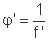
When f' is given in meters, the power φ' is in diopters. For convergent lenses, both f' and φ' are positive, while they are negative for divergent lenses. On the other hand, by default all the lenses have a stop of 70 mm and are centered with regard to the optical axis.
For the system that has been designed (we have added lenses, stops and objects), the upper window shows the corresponding ray tracing. In paraxial Optics, the law for image formation is Gauss' law: for a given object being a distance s (object distance) from a lens of focal length f', its image will be at a distance s' (image distance) from the lens, where:
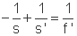
Here we suppose that the lens is placed in a medium of refraction index equal to one. We consider thin lenses, so that the distances are taken from their surfaces. Distances are positive for objects/images placed at the right of the lens, and negative to the left.
For example, the image of an object at the origin through a lens of focal f'=200 mm, placed 600 mm from the origin, is:
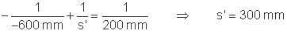
That is, it is formed 300 mm away from the lens, which corresponds to an absolute position from the origin of 900 mm.
For an off-axis object, we can define the lateral magnification (β') through the system as the relationship between the size of the image (y') and the size of the object (y), and it is given by:
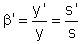
For the above example:
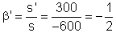
That is, if we consider an object with a half field of 4º, having a size
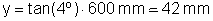
above the axis (positive), the size of its image will be:
That is, it will be inverted and half-sized.
For a compound lens system (having more than one lens), the image formation is done through each of the lenses, one after the other:
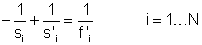
The subscripts refer to image formation through lens i of focal f'i (there are N lenses), for an object placed at an object distance si. The relationship between image distance to lens i ( s'i) and the object distance to the next lens i+1 (si+1), is:
where di,i+1 is the lens separation (position of lens i+1 with regard to lens i). It is positive if lens i+1 is at the right of lens i.
The magnification through the compound system can be obtained as the product of the lateral magnifications through each lens:
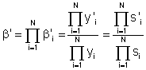
The program shows, in all cases, the position and size of the aperture stop (D.A.), the entrance pupil (P.E.) and the exit pupil (P.S.) of the system. The aperture stop of an optical system is the element (opening) that limits the amount of light that passes through the system from the object. The image of the aperture stop in the object or image space is called entrance or exit pupil, respectively.
Objects or images can be real (light rays converge and cross in a point) or virtual (rays seem to converge or diverge to/from a point). In the latter case, we can press the button "Show virtual object" or "Show virtual image" so that the ray tracing shows the rays' extensions with a dotted line, to the position of the virtual object or image, respectively.
By pressing the button "Cardinal points", we can see in the lower part of the window the ray tracing showing the geometrical determination of the cardinal points and planes of the optical system: the foci and focal planes (in red) and the principal points and planes (in magenta).
When having a single lens, which is supposed to be thin, the object and image principal planes coincide with the lens surface, and the position of F and F' can be easily determined from its object and image focals distances:
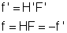
The object and image focal distances are equal and opposite in sign because we are supposing that the refractive indexes before and after the lens are the same.
For a compound system with two lenses of focals f'1 and f'2 placed in the same medium, the focal distances and positions of the principal planes can be computed as:
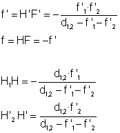
where d1,2 is, for thin lenses approximation, the distance between lens 1 and 2 (positive if lens 2 is to the right of lens 1). H1 and H'2 are the object principal plane for the first lens and image principal plane for the second one, respectively, and coincide with their corresponding surfaces.
In this section we can see image formation through an optical system without the approximations of paraxial Optics, which are not valid when apertures and fields in the system are not small. In this case, the images have some distortions compared to the original object. These are known as aberrations (the image of a point is not a point).
The program shows the real image formed through the system, both on and off axis. When the button "Image" is pressed, we can change its characteristics: distance from the paraxial plane to the image plane and the scale of the visualization window. The program gives the paraxial plane position, where the image would form following paraxial Optics approximations.
By default ("monochromatic" image), the image is calculated for a single wavelength,
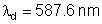
(green). In this case we can study spherical aberration, coma and astigmatism. The program computes a merit function, both on-axis and off-axis, which is related to the quality of the image. If the button "Color" is on, images for
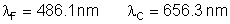
are also shown, in the corresponding colors (blue and red, respectively). In this case we can study chromatic aberration.
We can change characteristics of the object (position and field), of the lenses and of the stops (position and diameter). The lenses' case needs special attention: here the calculation is exact, we can change the position and power (or focal length) of the lenses, as well as the radii of their external surfaces and their refractive index. For a fixed power or focal length, we can see changes in aberrations depending on the radii. When studying colored images, we can also modify the lenses' refractive index nd (for a wavelength λd) and the Abbe number, defined as
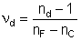
where nF and nC are the refractive indexes for λF and λC, respectively. The Abbe number characterizes the chromatic dispersion of the lens.
The program retrieves the data defined on the "Preliminary sketch" that was previously recorded in a file (see next section).
When this button is pressed, the program saves to a file the optical system characteristics designed in the "Preliminary sketch" (objects, lenses and stops), so that they can be retrieved afterwards.
| Preliminary sketch | Exact calculation (lens) | ||
| Power | φ' | Index | nd |
| Focal | f' | Abbe (number ) | νd |
| Aperture stop | D.A. | ||
| Entrance pupil | P.E. | ||
| Exit pupil | P.S. | ||
| Object principal plane | H | ||
| Image principal plane | H' | ||
| Object focus | F | ||
| Image focus | F' |